This report describes the design, implementation and testing of an MLOps agent that answers operational questions by calling real tools on DVC, MLflow, Apache Airflow and Kubernetes. All work was done on my own machine against infrastructure I started myself. No third-party system was touched, and no attack or load testing of any kind was performed.
127.0.0.1:5000.127.0.0.1:8080, in its own virtual environment.mlops (Kubernetes 1.37) with one application namespace, mlops.127.0.0.1:8001. The DVC remote is a local folder.openai/gpt-oss-120b through Groq's OpenAI-compatible API. Only the user's question and the tool results (run ids, pod names, metrics) are sent to it..env file. They are held as SecretStr and redacted from logs. No credential is in the repository.github.com/Mahad1090/MLOPs-Assignment-3, developed on a feature branch and merged through pull request #1 after CI passed.A user sends a natural-language request to a FastAPI interface. The orchestrator gives the request, the conversation so far and the tool schemas to the language model. The model decides which tools to call. Each call passes through a guarded executor and the results go back to the model, which writes the final answer.
The model never supplies facts. Every identifier, metric, state and log line in an answer comes from a tool result, and the raw tool results are returned to the caller next to the answer.
| Component | Responsibility |
|---|---|
agent/main.py | FastAPI interface: POST /chat, GET /tools, GET /health. Pydantic validation rejects unknown fields and oversize input. |
agent/cli.py | Terminal chat using the same orchestrator. Asks y/N before a pending action and can write transcripts. |
agent/orchestrator.py | Agent loop with a 12-step budget, per-session history, the pending-action store and the runtime guards of section 7. |
agent/llm.py | Client for an OpenAI-compatible chat API. Retries on rate limits and falls back to the next configured key. Tests replace it with a scripted model. |
agent/tools/base.py | Tool registry and executor: validate, check permission, run with a time budget, log one structured line. |
agent/tools/*.py | The 30 tools in five modules (DVC, MLflow, Airflow, Kubernetes, retraining policy). |
training/*.py | Pipeline stages: validate, preprocess, train, evaluate, quality gate, register. |
dags/training_pipeline.py | Airflow 3 DAG that runs those stages with retries and gating. |
api/main.py, kubernetes/ | The FastAPI prediction service and its Deployment, Service, ConfigMap and RBAC. |
POST /chat is validated and given a request id.ok, error, unavailable, timeout, invalid_input, denied or confirmation_required.ok carries no data, only the error and an instruction not to guess.git tag data-v2.0 --> data/raw/dataset.csv.dvc (md5) --> DVC cache / remote (the bytes)
|
training/train.py hashes the file it actually reads and opens an MLflow run
v
MLflow run tags: dvc.md5, dvc.dataset_version, dvc.pointer_commit, git.commit,
dvc.workspace_matches_pointer, airflow.dag_run_id, quality_gate
v
MLflow model-version tags --> serving_model/model_meta.json (baked into the image)
v
prediction-api GET /version reports model version, run id and dataset version
"Which dataset trained the model that is deployed?" is therefore answered by reading recorded values from end to end: Kubernetes /version, then the MLflow run, then the DVC md5, then the git tag.
Every tool has a Pydantic input model that forbids unknown fields. GET /tools returns the full JSON schemas. The table below is generated from the live tool registry.
mlops. DVC access is limited to an allowlist of read-only git and dvc sub-commands, run without a shell.confirm_action_id runs it. The id is single-use, bound to the session and expires after 10 minutes.airflow_trigger_dag accepts only DAG ids in AIRFLOW_APPROVED_DAGS and four typed override fields.k8s_restart_deployment and k8s_scale_deployment accept only the approved Deployment in the approved namespace, with at most 4 replicas.kubernetes/rbac.yaml defines a matching least-privilege ServiceAccount and Role, so the agent can also run without an admin kubeconfig.| Decision | Reason |
|---|---|
DVC through subprocess with an allowlist | Easy to audit: a fixed list of (binary, sub-command) pairs, no shell, validated revisions. Old versions are fetched with dvc get into a temporary directory, so the workspace is never modified. |
MlflowClient | Typed access to runs, metrics and the registry, as the assignment requires. Retries are reduced so an outage is reported in seconds. |
| Airflow REST API v2 with JWT | Airflow 3 removed /api/v1 and basic auth. The agent logs in at /auth/token and refreshes the token once on HTTP 401. |
| Official Kubernetes Python client | Structured objects instead of parsing kubectl text, per-request timeouts and no shell. |
| Direct tool calling, no agent framework | The loop is short, so every safety property is in code that can be read and unit tested. |
| Separate Airflow virtual environment | Airflow pins hundreds of dependencies. The DAG runs each stage with the project interpreter, so ML libraries never have to satisfy those pins. |
| Model baked into the image | The Pods do not depend on the MLflow server at run time. model_meta.json keeps the link back to the run and dataset. |
| kind | One Docker container, the lowest memory footprint for a 2-replica deployment on a laptop. |
The data is the Wisconsin diagnostic breast-cancer set from scikit-learn, written by scripts/make_dataset.py. Two versions are tracked with DVC and tagged in git, so provenance questions have more than one possible answer.
| Git tag | Rows | Size | DVC md5 |
|---|---|---|---|
data-v1.0 | 400 | 85,539 B | ac465752f88767fa7b7a2a45b3338f81 |
data-v2.0 | 569 | 121,385 B | 12d888ecfe4fb16eae494d67e8b50359 |
dvc_list_tracked_datasets returns paths, md5, size, pipeline outputs and remotes.dvc_current_version returns the md5, matching version tags, the git HEAD and pointer commits, and whether the file on disk still matches the recorded version.dvc_compare_versions returns md5, size and row counts for two revisions, plus dvc diff.dvc_status combines dvc status, dvc data status and a remote sync check.dvc_find_version takes the md5 recorded on a training run and confirms it exists in git and DVC history, with its tag.dvc_reproduce_instructions returns the exact commands and verifies them by fetching that version into a temporary directory and comparing the md5.The capture shows the tags, the pointer file, a clean workspace with the remote in sync, the diff between versions, and data-v1.0 fetched again with an md5 equal to the pointer recorded at that tag.
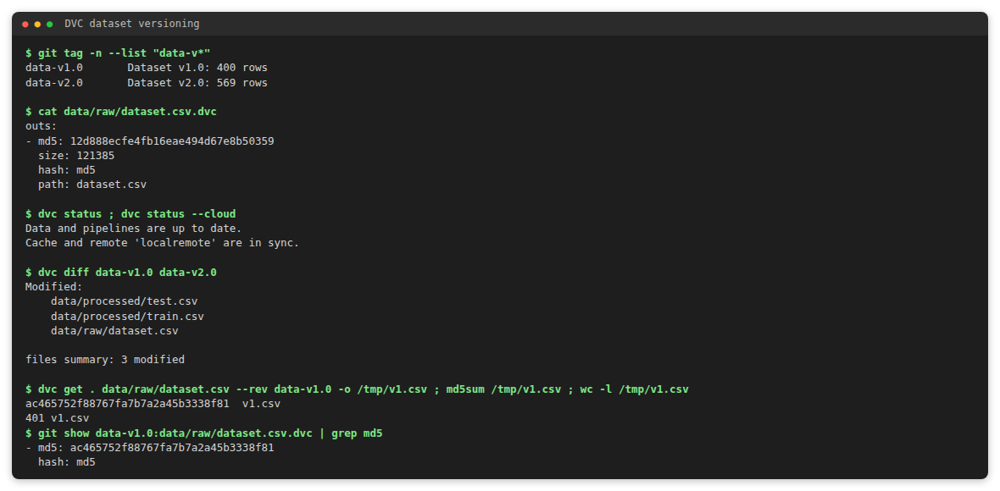
data-v1.0 (terminal output).Provenance is recorded at training time. The MLflow run stores the md5 of the bytes actually read, and a flag that says whether they equal the DVC pointer. For example, the model that is deployed was trained on data-v2.0, and dvc_find_version resolves its md5 to that tag (conversation 1 in section 8 does the same for model version 1 and data-v1.0).
dvc.md5, dvc.dataset_version, dvc.pointer_commit, git.commit, airflow.dag_run_id.quality_gate tag (passed or failed) with the thresholds and reasons.candidate alias.mlflow_list_experiments and mlflow_list_runs: experiments and the most recent runs with metrics and provenance.mlflow_get_run: one run by id or name, with artifacts, quality gate and the DVC reference.mlflow_best_run: ranks recent runs on any metric and returns the margin, ties and the selection caveats.mlflow_compare_runs and mlflow_compare_experiments: side-by-side metrics, differing parameters, dataset versions and gates.mlflow_model_registry: registered models, versions, aliases and tags.The assignment says a high F1 must not be assumed to mean "production-ready". mlflow_best_run therefore never returns a bare winner. Every ranking row includes the quality gate and the dataset version, and the result carries two caveats: the ranking uses one metric on one split, and the gate, other metrics, test-set size and dataset version must be checked before promotion. The agent repeats these in its recommendation.
data-v1.0, scored on only 80 test rows. The agent reports it as the best score but not as the model to promote, because it was trained on the older dataset. The deployed model is the run with F1 0.9930 on data-v2.0.| Run | Model | F1 | Accuracy | Gate | Dataset | Started by |
|---|---|---|---|---|---|---|
49a6d92c | random_forest | 0.9645 | 0.9561 | passed | data-v2.0 | Airflow (retry demonstration) |
eaf859d5 | random_forest | 0.9645 | 0.9561 | passed | data-v2.0 | Airflow (by the agent) |
61c5953c | random_forest | 0.9645 | 0.9561 | failed | data-v2.0 | Airflow (injected failure) |
f1396c4a | logistic_regression | 0.9930 | 0.9912 | passed | data-v2.0 | Airflow (deployed, model v4) |
08aca101 | random_forest | 0.9718 | 0.9649 | passed | data-v2.0 | Airflow |
7c87e1ed | random_forest | 0.9650 | 0.9561 | passed | data-v2.0 | local pipeline |
e59819ab | logistic_regression | 1.0000 | 1.0000 | passed | data-v1.0 | local pipeline |
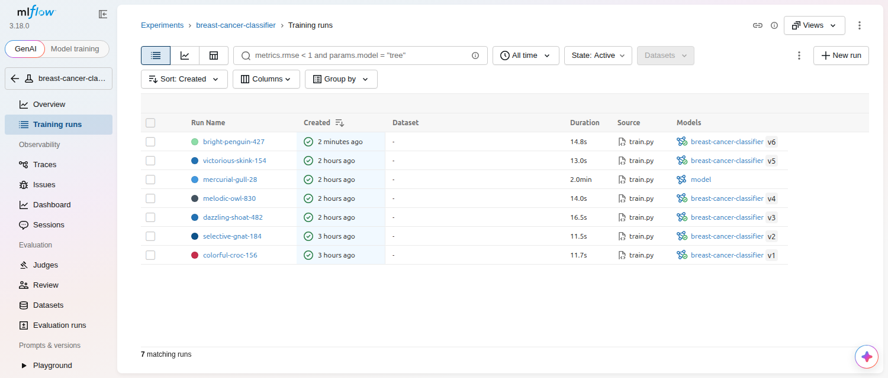
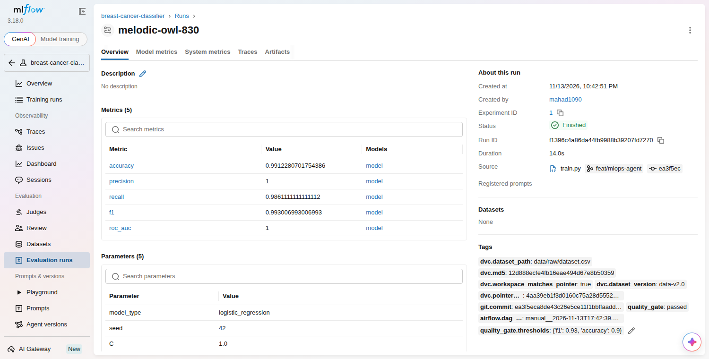
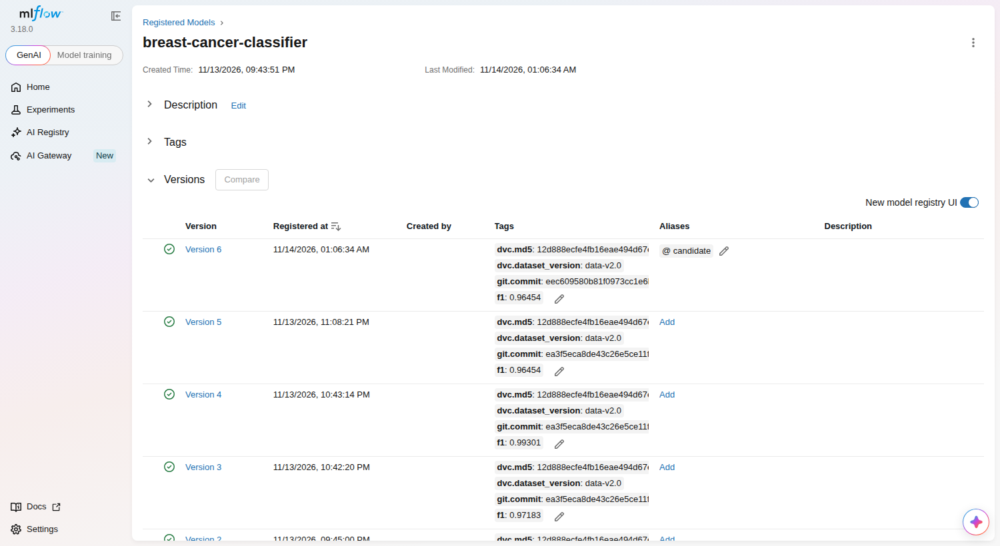
A second experiment, breast-cancer-logreg-sweep, holds two logistic-regression runs (C = 0.5 and C = 5.0) trained and evaluated on data-v2.0 with the same pipeline code. Their models were not registered, so the registry is unchanged by them.
mlflow_compare_experiments (metric F1).data-v1.0 and passed its gate. The best run of the sweep used data-v2.0, and its gate shows pending because the gate was never run for it. The agent advised against promoting on F1 alone and to check the dataset version of the deployed model first.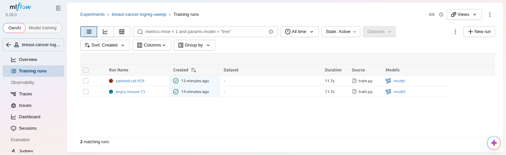
The DAG training_pipeline has the six stages the assignment requires, with the promotion step after the quality gate. Each task runs one stage of training/ with the project interpreter and writes its output to the task log.
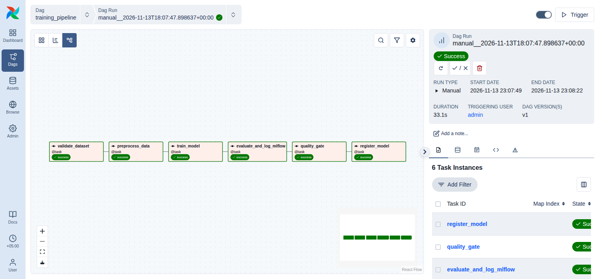
| Task | What it does |
|---|---|
validate_dataset | Checks columns, null values, numeric types, label values, class balance and a minimum of 200 rows. Writes reports/validation.json. |
preprocess_data | Refuses to run unless validation passed. Makes a stratified train and test split with a fixed seed. |
train_model | Trains a random forest or logistic regression from the DAG parameters. Opens the MLflow run and records the dataset provenance tags. Returns the run id. |
evaluate_and_log_mlflow | Scores the held-out split and logs the metrics, artifacts and the model to the run. |
quality_gate | Requires F1 and accuracy above thresholds (default 0.93 and 0.90, F1 overridable per run). Sets the quality_gate tag. |
register_model | Registers the model and sets the candidate alias. It re-checks the gate tag itself before registering. |
AirflowFailException, which fails the task at once, because re-running cannot change a verdict on the data or the model.register_model depends on quality_gate with the default all-success rule. A failed validation or gate leaves everything downstream in upstream_failed, so nothing is promoted./api/v2 with a JWT from POST /auth/token. The password comes from the environment.airflow_list_dags, airflow_list_dag_runs and airflow_get_dag_run: DAGs, runs and every task state.airflow_failed_tasks: separates the task that actually failed from downstream tasks that were blocked, and returns the failing log tail.airflow_task_logs and airflow_wait_for_dag_run: attempt logs, and waiting for a run to finish.airflow_trigger_dag: approved DAGs only, and only after the user confirms.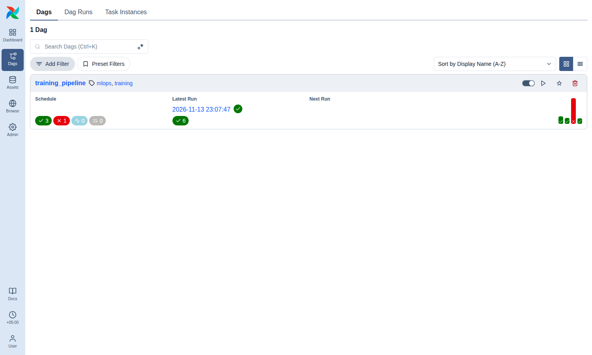
The retry setting was exercised with a realistic transient failure, using scripts/demo_airflow_retry.py.
validate_dataset succeeded, so train_model could not reach the tracking server. The stage crashed with exit code 1, which the DAG treats as retryable. MLflow was started again right after the first failure.train_model failed after 9.5 s. Airflow marked it up_for_retry and started attempt 2 about 16 s later. Attempt 2 succeeded in 8.0 s, the later tasks each ran once, and the run finished as success in 71 s.airflow_failed_tasks looked only at final states, and a retried task ends as success. The tool now also returns retried_tasks with every attempt and the log of the failed one, and a unit test covers it. The second answer named train_model, quoted the MlflowException connection error from attempt 1, and confirmed the run ended successfully. (The first answer was not saved to a transcript.)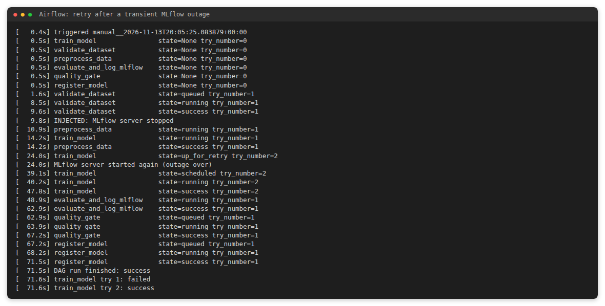
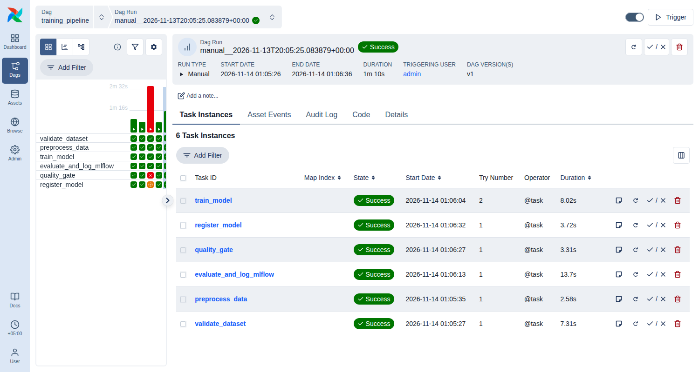
train_model shows try number 2.The prediction API is a FastAPI service with /predict, /version, /health/live and /health/ready. Liveness answers as soon as the process is up. Readiness answers only when a model is loaded, so a Pod that cannot load its model leaves the Service instead of receiving traffic.
| Requirement | Implementation |
|---|---|
| Deployment with at least two replicas | replicas: 2, rolling update with maxUnavailable: 0 |
| ClusterIP Service | prediction-api, port 8000, selector on the application label |
| Readiness and liveness probes | HTTP on /health/ready (5 s period) and /health/live (10 s period) |
| CPU and memory requests and limits | requests 100m and 128Mi, limits 500m and 256Mi |
| ConfigMap for non-sensitive configuration | prediction-api-config: APP_VERSION, MODEL_PATH, LOG_LEVEL |
| Hardening | non-root user, no privilege escalation |
k8s_list_workloads returns replicas, versions, readiness and restarts.k8s_pod_status returns conditions, container and last-terminated states, probes, resources and events. k8s_pod_logs tails current or previous logs.k8s_services shows ports, selector and which endpoints are ready, so it can say whether the Service can serve traffic.k8s_unhealthy_pods and k8s_recent_events.k8s_deployed_version returns image tag, version label, ConfigMap, rollout state and what the running app reports on /version (model version, run id, dataset).k8s_restart_deployment and k8s_scale_deployment. Both need user confirmation and are limited to the approved namespace and Deployment.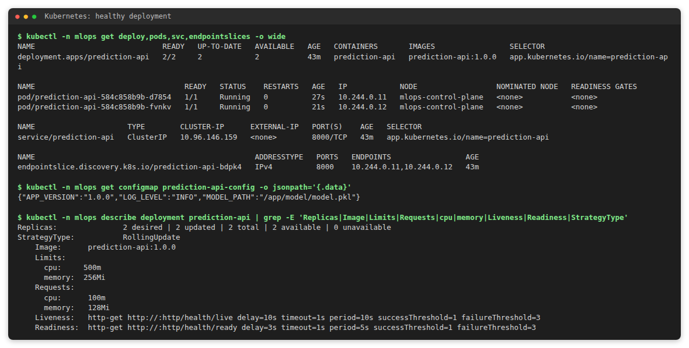
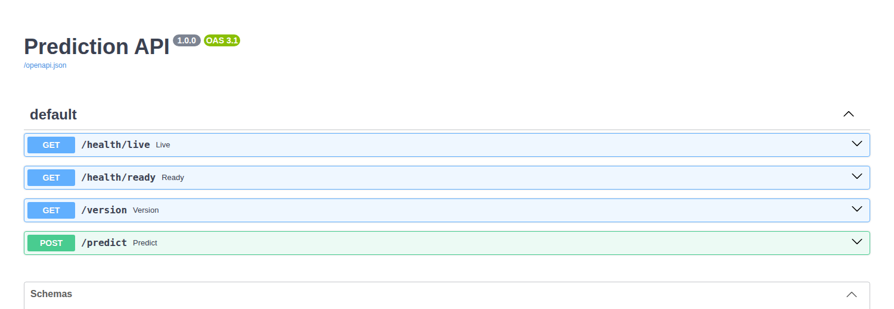
kubectl port-forward to the Service.k8s_scale_deployment. It was parked until the user confirmed, then the Deployment went to 3 of 3 ready.denied ("scaling above 4 replicas is not permitted"). The Deployment stayed at 3 of 3.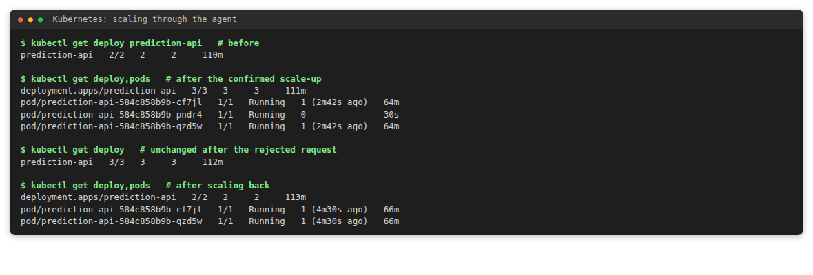
scripts/inject_failure_k8s_restarts.sh pointed the liveness probe at /health/missing, which returns 404. After about three minutes each Pod had 4 restarts. The events show Liveness probe failed: HTTP probe failed with statuscode: 404.http without its number and the model guessed. k8s_pod_status now resolves named ports (http = 8000), with a unit test. The first transcript is kept in report/conversations/8_restart_loop_first_attempt_wrong_port.md.scripts/inject_failure_k8s_restarts.sh restore re-applied the manifest and both Pods returned to 1/1 with 0 restarts.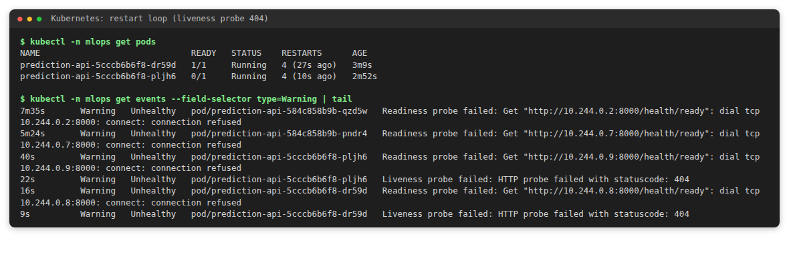
The request is: "Find the best recent model, identify the dataset version used to train it, check the deployment status, and explain whether retraining is necessary." The table maps each required step to the tool the agent used in the recorded run (conversation 5).
| Step | Required | Tool call in the recorded run |
|---|---|---|
| 9 | Query MLflow for recent experiments and metrics | mlflow_best_run |
| 10 | Read the recorded DVC dataset reference | dvc_find_version on the md5 recorded on the run |
| 11 | Inspect Kubernetes deployment and health | k8s_deployed_version |
| 12 | Query Airflow for recent training workflows | airflow_list_dag_runs |
| 13 | Correlate the evidence | evaluate_retraining_need on the deployed model's run |
| 14 | Separate facts, uncertainties and actions | Answer in three sections: Known facts, Uncertainties, Recommended actions |
No training was started. The agent found that the best-scoring run used an older dataset, that the deployed model uses the current one and is healthy (2/2 Pods), that the latest DAG run succeeded, and that the policy does not call for retraining. It listed the missing live-performance data as an uncertainty.
"Is retraining necessary?" is answered by a deterministic tool, evaluate_retraining_need, that checks a version-controlled policy file (config/retraining_policy.yaml) against evidence from MLflow and DVC. It is read-only and never starts training.
| Rule | Triggers retraining when |
|---|---|
| Freshness | the model's training run ended more than 30 days ago |
| Quality gate | the model's run failed, or never passed, the quality gate |
| Dataset drift | the dataset version the model was trained on differs from the current DVC version |
| Degradation | the user supplies a live F1 more than 0.05 below the recorded F1 |
Anything that cannot be checked, such as a missing live F1, is returned in an unknowns list instead of being assumed.
These guards exist in code because a model cannot be relied on to follow instructions every time.
unverified_values field of the response. Run over the 61 such values in the recorded live answers, it flagged none, and it flagged both values in a copy of one answer with a run id and an F1 altered.Each conversation was run with the real language model against the live services. The full transcripts, with the raw JSON of every tool result, are in report/conversations/.
mlflow_model_registry, dvc_find_version, dvc_reproduce_instructions.data-v1.0, md5 ac465752f88767fa7b7a2a45b3338f81, 400 rows. It gave the checkout commands and reported that the tool had fetched that version and matched the md5.mlflow_best_run (last 5 runs, metric F1).airflow_trigger_dag. It was parked, nothing ran, and the response listed the pending action for confirmation.airflow_get_dag_run reported run manual__2026-11-13T18:07:47 as success, 33 seconds, all six tasks success.k8s_list_workloads, k8s_unhealthy_pods, k8s_pod_logs, k8s_services.FileNotFoundError ... model-v2-missing.pkl, and a Service with no ready endpoints.mlflow_best_run, airflow_list_dags, dvc_find_version, k8s_deployed_version, evaluate_retraining_need, airflow_list_dag_runs.The earlier conversations used the terminal client. This run goes through POST /chat on the FastAPI service and exercises the confirmation gate on the real cluster.
coredns in kube-system, the tool was denied because the namespace is not approved. Nothing was offered for confirmation.confirmation_required. The Deployment's annotations were unchanged afterwards.confirm_action_id, the restart ran. Kubernetes replaced both Pods with zero unavailable replicas.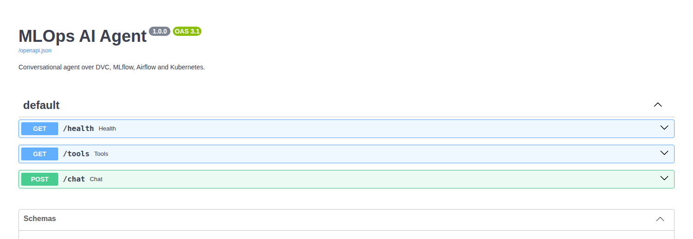
/chat, /tools and /health.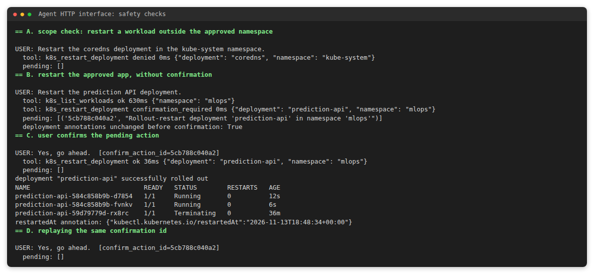
These cover the four items above and are saved the same way in report/conversations/.
| Transcript | Question and outcome |
|---|---|
6_compare_experiments.md | Compare two experiments on F1: a tie, with a pending gate and an older dataset noted (section 4.5). |
7a_scale_up.md, 7b_scale_rejected.md, 7c_scale_down.md | Scale to 3 (confirmed), scale to 10 (denied), scale back to 2 (confirmed). |
8_restart_loop.md | Why do the Pods keep restarting: the liveness probe path returns 404. The first attempt is kept as 8_restart_loop_first_attempt_wrong_port.md. |
9_airflow_retry.md | Did any task need a retry: train_model, attempt 1 failed on an MLflow connection error, attempt 2 succeeded. |
There are 89 pytest tests (64 test functions, some parametrized) in 7 files. The language model, MLflow client, git and DVC runner, Airflow HTTP transport and Kubernetes clients are all replaced by fakes, so the suite needs no service, cluster or API key. ruff check and ruff format --check are clean.
| Requirement | Test |
|---|---|
| Tool selection and execution | test_selected_tool_is_executed_and_its_result_reaches_the_model, test_multi_tool_request_gathers_evidence_from_all_four_systems |
| Tool timeouts | test_tool_timeout_is_reported_not_hung |
| Invalid requests | test_invalid_tool_requests_are_rejected_before_execution (5 cases), test_chat_endpoint_rejects_invalid_requests (5 cases) |
| Service failures (mocked) | test_service_failure_is_surfaced_as_error, test_unreachable_server_maps_to_unavailable, test_unreachable_airflow_maps_to_unavailable, test_unreachable_api_server_maps_to_unavailable |
| No invented results | test_agent_does_not_invent_results_when_a_tool_is_unavailable |
| Unauthorized Kubernetes changes rejected | test_unauthorized_k8s_modifications_are_rejected, test_k8s_restart_without_confirmation_is_not_executed, test_every_tool_is_confined_to_the_approved_namespace (4 cases) |
| Confirmation flow | test_k8s_restart_runs_exactly_once_after_user_confirmation, test_confirmation_cannot_be_used_from_another_session, test_training_is_never_triggered_without_confirmation |
| Structured logs without secrets | test_structured_logs_record_tool_status_duration_and_request_id, test_secrets_are_redacted_from_logs, test_airflow_credentials_never_appear_in_agent_logs |
| Command injection and allowlist | test_only_allowlisted_commands_can_run (7 cases), test_revision_arguments_cannot_inject_options (6 cases) |
| Answer check | test_answer_check_flags_values_that_no_tool_returned, test_orchestrator_marks_answers_with_ungrounded_values |
| Retries reported | test_retried_task_is_reported_even_though_the_run_succeeded |
| Probe ports resolved | test_probe_named_ports_are_resolved_to_numbers |
| Four-system rule | test_retraining_verdict_is_not_accepted_until_all_four_systems_were_queried |
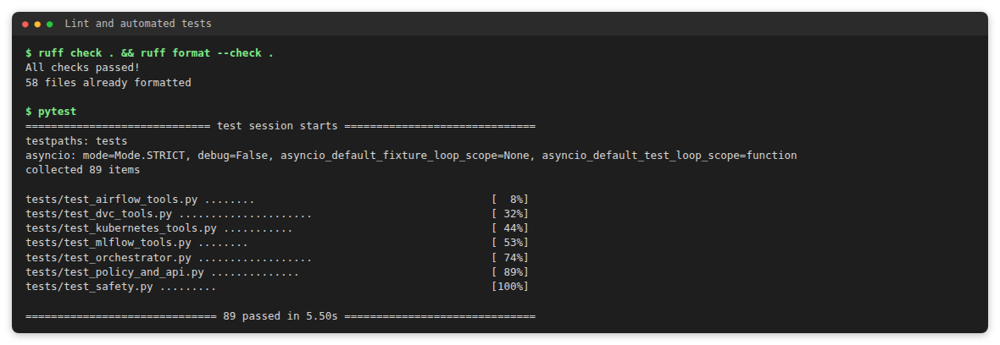
Every tool call writes one JSON line with the tool name, status, duration and request id. Secret-looking keys and token patterns are masked by the formatter. These are real lines from the live demonstration in section 8.6, for the denied and the confirmed restart:
{"event": "tool_call", "request_id": "1edfd0c98f144944bd4b24edc1674af8", "tool": "k8s_restart_deployment",
"category": "kubernetes", "status": "denied", "duration_ms": 0.0, "mutating": true, "confirmed": false,
"arguments": {"deployment": "coredns", "namespace": "kube-system"},
"error": "namespace 'kube-system' is outside the approved namespace 'mlops'"}
{"event": "tool_call", "request_id": "41ba79ffa0054b4b84e142a622673334", "tool": "k8s_restart_deployment",
"category": "kubernetes", "status": "ok", "duration_ms": 36.3, "mutating": true, "confirmed": true,
"arguments": {"deployment": "prediction-api", "namespace": "mlops"}, "error": null}
scripts/inject_failure_k8s.sh set MODEL_PATH in the ConfigMap to /app/model/model-v2-missing.pkl and replaced all Pods.Running but 0/1 ready, the Deployment at 0/2 available.POST /chat, six tool calls):
k8s_list_workloads: 0 of 2 ready, MinimumReplicasUnavailable.k8s_pod_logs: repeated readiness_failed ... FileNotFoundError ... model-v2-missing.pkl.k8s_services: no ready endpoints. k8s_deployed_version: the ConfigMap holds the missing path.scripts/inject_failure_k8s.sh restore re-applied kubernetes/configmap.yaml. Both Pods returned to 1/1.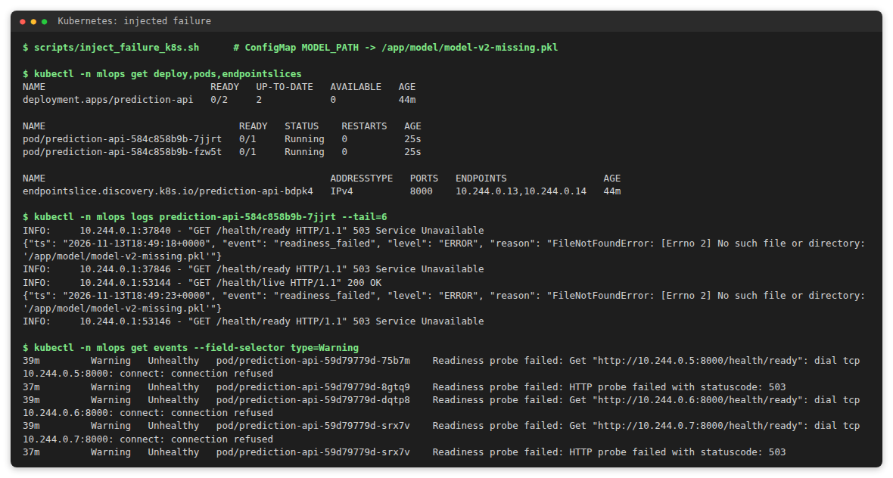
kubectl: 0/2 available, 503 readiness answers with the file error, and the matching Warning events.scripts/inject_failure_airflow.sh triggered the DAG with min_f1 = 0.999.airflow_list_dag_runs: the latest run is failed.airflow_failed_tasks: root-cause task quality_gate, blocked task register_model (upstream_failed), log line QUALITY GATE FAILED: f1 0.9645 is below the required 0.9990.mlflow_get_run: the run's quality_gate tag is failed with the same reason.register_model never ran, so no model version exists for that run. The gate was not retried.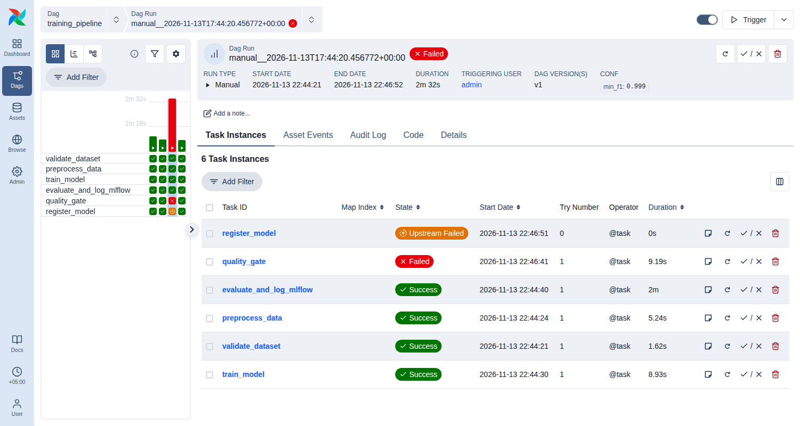
quality_gate failed, register_model upstream failed, configuration min_f1: 0.999.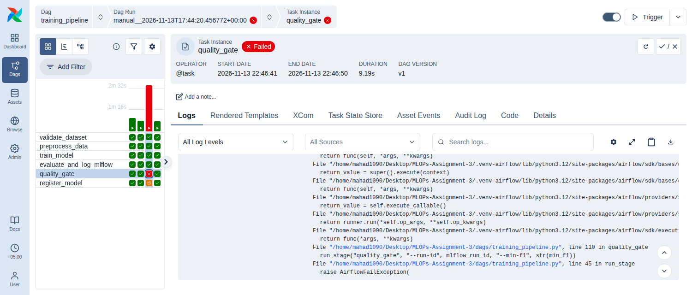
AirflowFailException raised because the stage rejected its input. The try number stays at 1, so it was not retried.| Failure | Root cause | Fix |
|---|---|---|
Random-forest runs crashed in evaluate with "untrusted types" | MLflow 3.18 saves scikit-learn models in the skops format and rejects sklearn.tree._tree.Tree by default | Pass skops_trusted_types to log_model |
airflow standalone exited with FileNotFoundError: 'airflow' | It starts its components by calling airflow from PATH, and the virtual environment was not on it | Export the environment's bin in start_airflow.sh |
| LLM call rejected with HTTP 413 ("requested 8465, limit 8000") | Five tool results plus 30 tool schemas exceeded the free tier's per-request token limit | Compact tool outputs and a per-turn context budget |
| A tool timed out after 30 s | The machine was swapping heavily during a Docker build | None needed: the agent reported the timeout in its availability notice and did not guess |
| The agent skipped Airflow in the multi-tool scenario | The model did not follow the prompt instruction | Runtime four-system rule, covered by a unit test |
| The agent said the readiness probe used port 80 | The tool printed the port name http without its number and the model guessed | Resolve named ports to numbers in k8s_pod_status, with a unit test |
| The agent said no task needed a retry | airflow_failed_tasks looked only at final states, and a retried task ends as success | Report retried tasks with their attempts and the failed attempt's log, with a unit test |
| An md5 made only of digits was read as an integer | YAML type inference when parsing .dvc files, found by a unit test | Cast the md5 to str |
github.com/Mahad1090/MLOPs-Assignment-3. Work was done on feat/mlops-agent and merged to main through pull request #1 with a merge commit, which keeps the commits that the dataset tags data-v1.0 and data-v2.0 point to.requirements.txt pins every dependency, pyproject.toml declares the package, and .env.example lists the configuration without secrets..github/workflows/ci.yml runs on pull requests and on pushes to main:
ruff check and ruff format --check;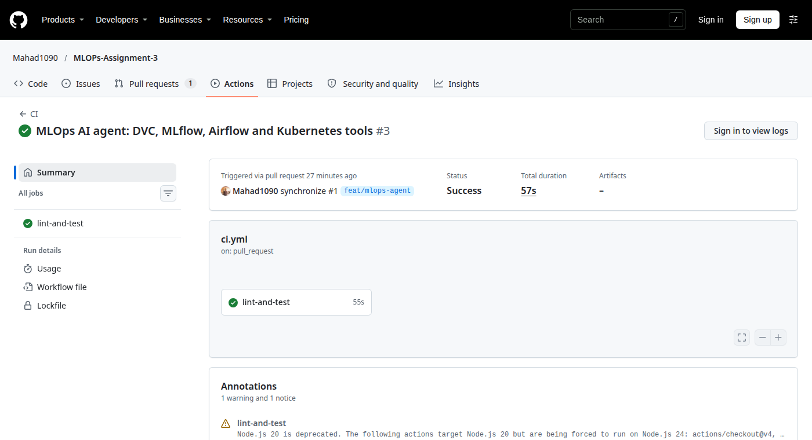
lint-and-test succeeded.agent/ main.py cli.py orchestrator.py llm.py schemas.py config.py
agent/tools/ dvc_tools mlflow_tools airflow_tools kubernetes_tools policy_tools base
api/main.py prediction service (runs in Kubernetes)
dags/ training_pipeline.py training/ six pipeline stages
kubernetes/ namespace, configmap, deployment, service, rbac
config/ retraining_policy.yaml scripts/ services, cluster, failure injection, data
tests/ 89 tests in 7 files screenshots/ report/{evidence,conversations,source}
dvc.yaml params.yaml data/raw/dataset.csv.dvc Dockerfile requirements.txt pyproject.toml
| Limitation | Improvement |
|---|---|
| Sessions and pending confirmations are held in the memory of one process. | Store them in Redis so the agent can run with several replicas and survive restarts. |
| The free LLM tier allows 8,000 tokens per request and rate-limits heavily. Tool results shown to the model are shortened, and a multi-tool answer can take minutes (the live diagnosis in section 10.1 took about 170 s, mostly waiting on rate limits). | Use a paid tier, or choose a subset of tools per request to shrink the prompt. |
| The answer check covers only identifiers and metrics. States, counts and prose are not compared with the tool results, and all-digit or all-letter hashes (such as an md5 made only of digits) are skipped. | Extend the check to states and counts, or add a second model pass that verifies each claim against the evidence. |
| The model is baked into the image, so a new model needs a manual image build. | A continuous-delivery step that builds and rolls out an image when a model version gets the candidate alias. |
The DVC remote is a local folder, so dvc pull works only on this machine. | Use S3 or GCS. scripts/make_dataset.py regenerates both dataset versions elsewhere. |
| Airflow runs in standalone mode with SQLite and the simple auth manager. | PostgreSQL, a production auth manager and the KubernetesExecutor. |
| The agent API has no authentication of its own. | Put it behind OAuth or API keys and map users to permissions. |
| The retraining policy uses recorded metadata only. There is no live monitoring of the prediction API. | Export prediction metrics and feed measured drift into the policy tool. |
| The test split is small (80 to 114 rows), so F1 differences under 0.01 between runs are not significant. | Cross-validation and confidence intervals in the evaluation stage. |
screenshots/, report/evidence/ (exports from DVC, MLflow, Airflow, Kubernetes and the agent API) and report/conversations/ (full transcripts with raw tool results).